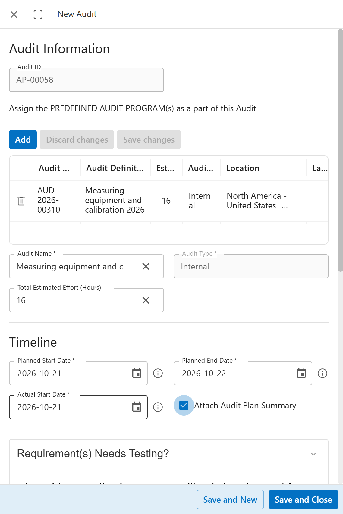
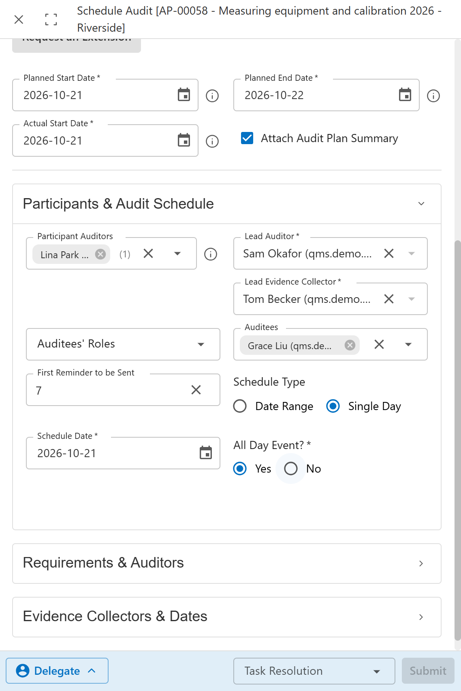
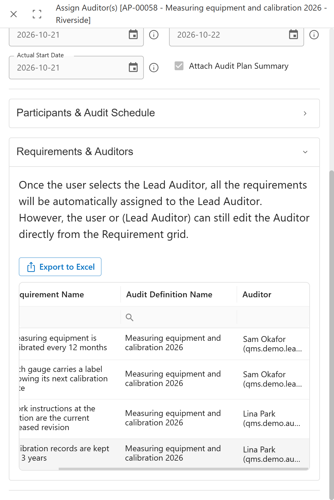
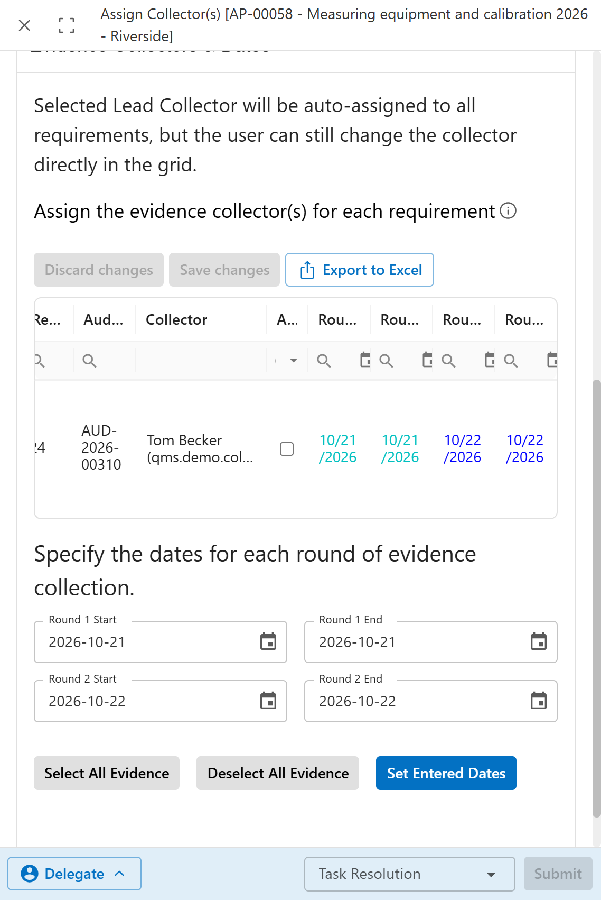
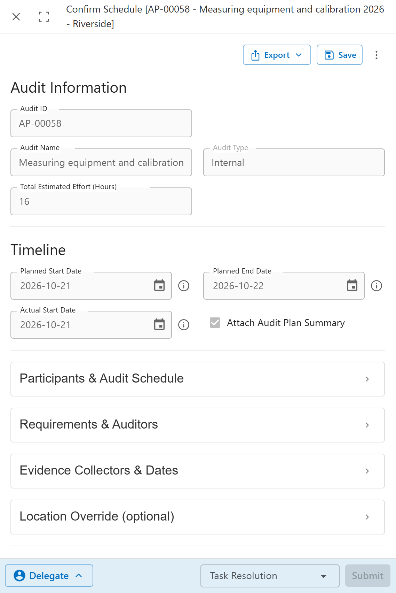

Only the leader of the program's team can plan it. At Cedar Valley that is Marco.
Plan the audit
Marco plans this year's run of the calibration program for Riverside, on 21 and 22 October.
Open Internal Audit Program Management > Manage Audit Schedules and click Add under List of Audits. The form is headed New Audit.

1234- Add picks the program to run.
- The program, with its effort and site.
- Planned Start Date, Planned End Date and Actual Start Date.
- Save and Close creates the audit, here AP-00058.
The audit waits until its planned start date. On that day, Marco gets the next task.
Name the people
Marco decides who does what. Sam leads the audit, Lina helps Sam, Tom collects the evidence, and Grace is the auditee. Her area is the one audited.
Marco gets Schedule Audit in To Do. The section Participants & Audit Schedule holds the people.

12345- Participant Auditors: the auditors who help the lead.
- Lead Auditor runs the audit.
- Lead Evidence Collector organises the evidence.
- Auditees get the emails about the audit. Auditees' Roles can name a role instead of a person.
- In Task Resolution, pick Establish Contact, then Submit. The auditees get the engagement letter.
Share out the requirements
Sam keeps R1 and R2 and gives R3 and R4 to Lina. Each auditor checks only their own requirements.
Sam gets Assign Auditor(s). In Requirements & Auditors, every requirement starts with the lead auditor. Sam changes the auditor in the grid where needed.

12- The note on the form says that all requirements go to the lead auditor first.
- Auditor: R1 and R2 for Sam, R3 and R4 for Lina.
Sam finishes with Submit Auditors.
Plan the evidence rounds
Tom will collect the evidence for the R1 test himself. A round is a period in which evidence is gathered.
Tom gets Assign Collector(s), because he is the lead evidence collector.

123- The collector for each test.
- Start and end dates for Round 1 and Round 2.
- Set Entered Dates copies the dates to the ticked rows. If it does nothing, type the dates into the grid cells instead.
Tom finishes with Submit Collectors.
Confirm the schedule
Marco checks that everything is in place and confirms. From now on the audit runs.
Marco gets Confirm Schedule. The sections show the people, the auditors and the collectors chosen in the steps before.

12- Each section can be opened to check it.
- Confirm starts the audit. Reject sends it back.
Common mistakes
- Planning the audit as someone other than the team leader. The product refuses to plan it.
- A planned start date before the program's start of period. The product rejects the dates.
- Leaving every requirement with the lead auditor. Share them, or one person does the whole audit.
- Forgetting the auditees. They get no task, so the emails are all they see.